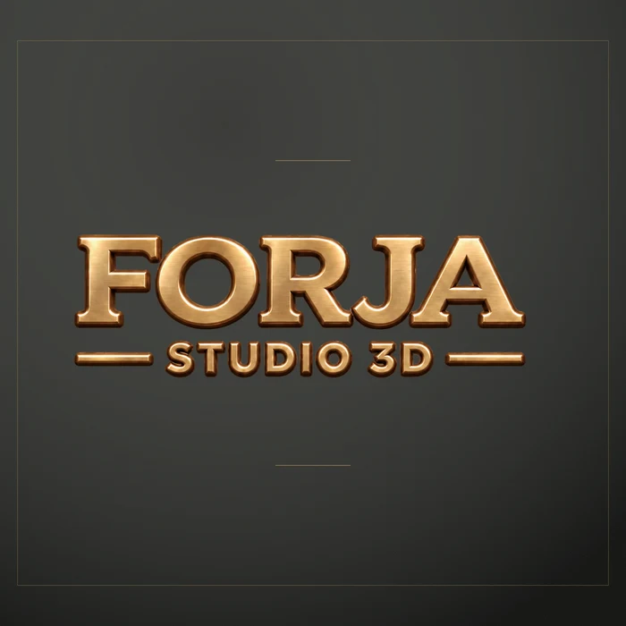
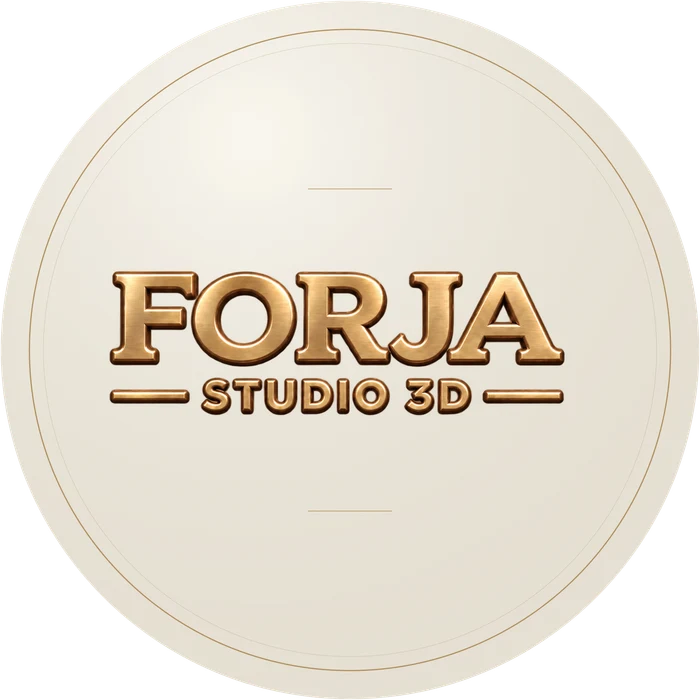

A forma certa
para cada espaço.
A identidade da Forja Studio 3D, pronta para a divulgação do seu evento.
9 versões · PNG e JPG · pacote ZIP, 17,5 MB


Escolha seu formato.
A mesma marca, no encaixe que o seu material precisa.


Quadrado
TransparentePNG · 1800 × 1800 px · Sem fundo
Posts, materiais de divulgação e espaços quadrados.

Redondo
CarvãoPNG · 1800 × 1800 px · Cantos transparentes
Avatares, selos e áreas de patrocínio circulares.

Redondo
MarfimPNG · 1800 × 1800 px · Cantos transparentes
Avatares, selos e áreas de patrocínio circulares.

Redondo
TransparentePNG · 1800 × 1800 px · Sem fundo
Avatares, selos e áreas de patrocínio circulares.


Banner
TransparentePNG · 2400 × 800 px · Sem fundo
Cabeçalhos, faixas e assinaturas horizontais.

O quadriculado indica transparência e não faz parte do arquivo baixado.
Precisa apenas da marca?
O recorte oficial, sem moldura e sem fundo, na resolução original de 1139 × 380 px.

Pronto para
entrar na sua arte.
Alguns cuidados para a marca aparecer bem em qualquer divulgação.
Seu layout já tem fundo?
Escolha Transparente. A marca se integra à sua arte. Teste sobre um fundo claro ou escuro na prévia ampliada.
Quer uma composição pronta?
Use Carvão para um fundo escuro ou Marfim para um fundo claro. As versões redondas têm cantos transparentes.
Preserve a proporção.
Redimensione pelos cantos, sem esticar nem cortar as letras. Para impressão grande, confira a resolução com a gráfica.
A coleção inteira.
Em um só download.
Leve todos os formatos e escolha com calma no seu editor.